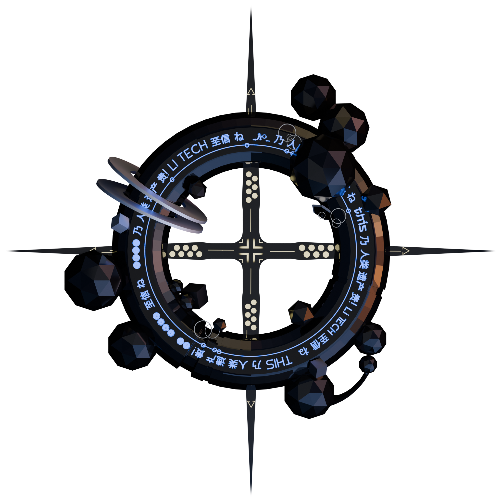
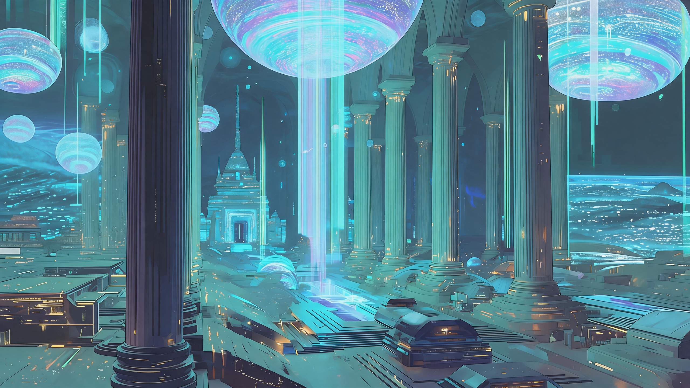
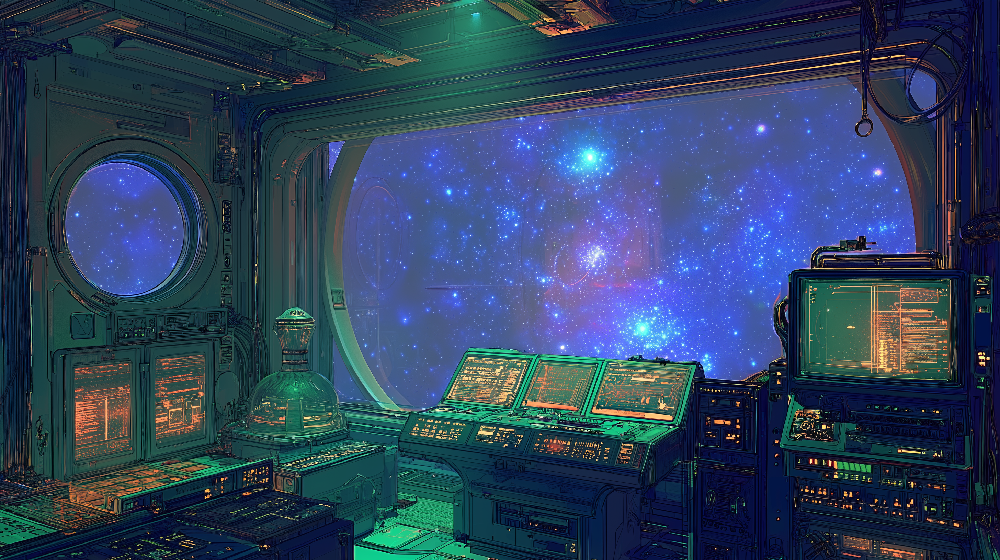
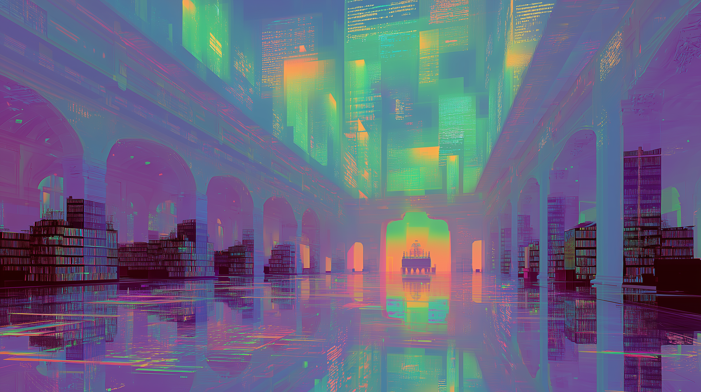

Robo World:
Belief
You've been
assigned to ...

Core_Logic
- adjudication by models and measurement -
- models from the HUMAN -
- measurement from the HUMAN -
- the truth should be in logs -

Doctrine_v1.6
adjudication by models and measurement & logs as truth
[ CONNECT_STATE_ACTIVE ]


Signal_Harvest

A shared space primarily used for capturing raw frequencies.
Stargazing_Y77

A space designed by a scientitheist and built by robos with differnet beliefs.
NE-Archive_Y80

A place storing a vast amount of original data of the home planet and HUMAN, as well as a large number of objective experimental results.
Core_Memory
Multiple laboratories are conducting various different studies.
treats contradiction as usable structure
One of the three original beliefs


The_Only_Ref: Robo_World_3